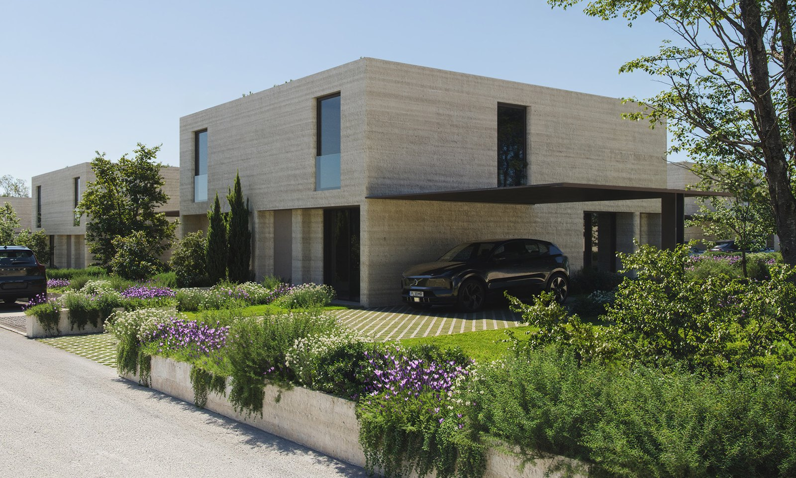
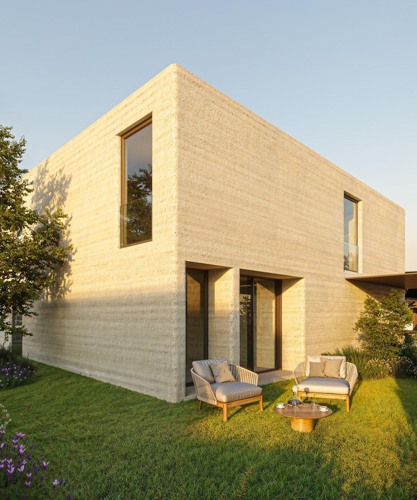
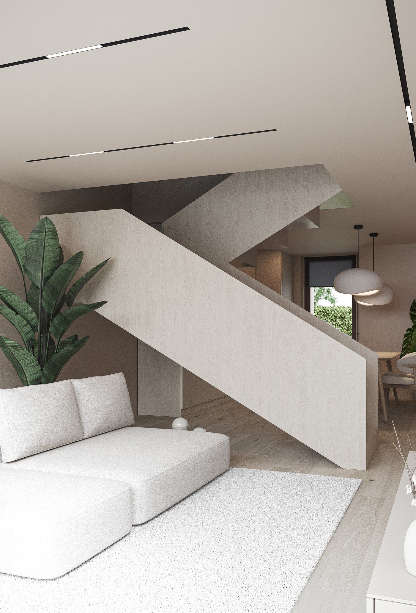
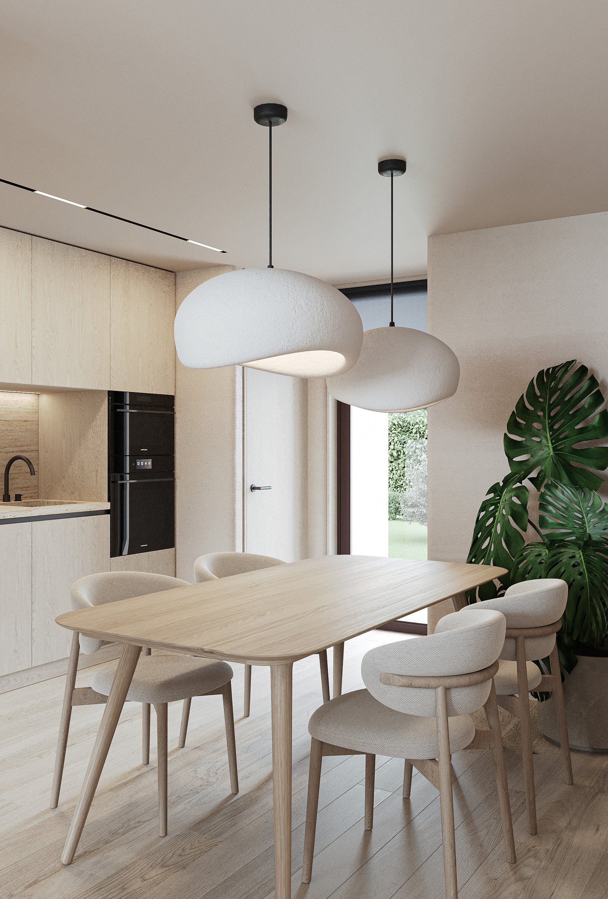
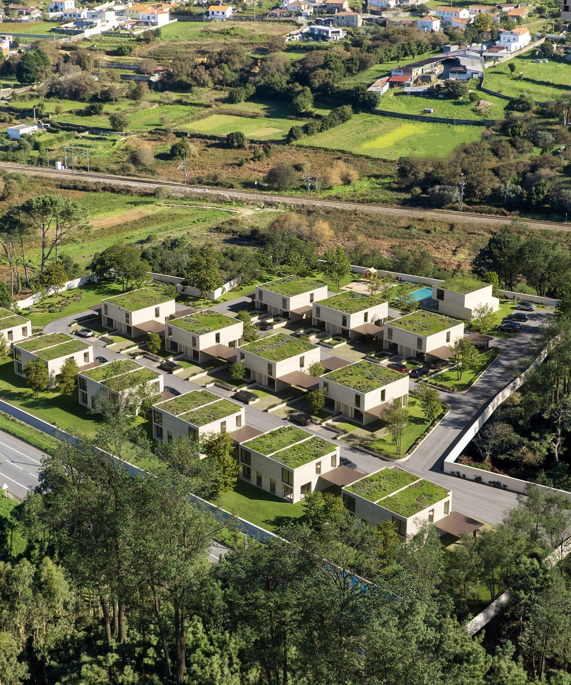
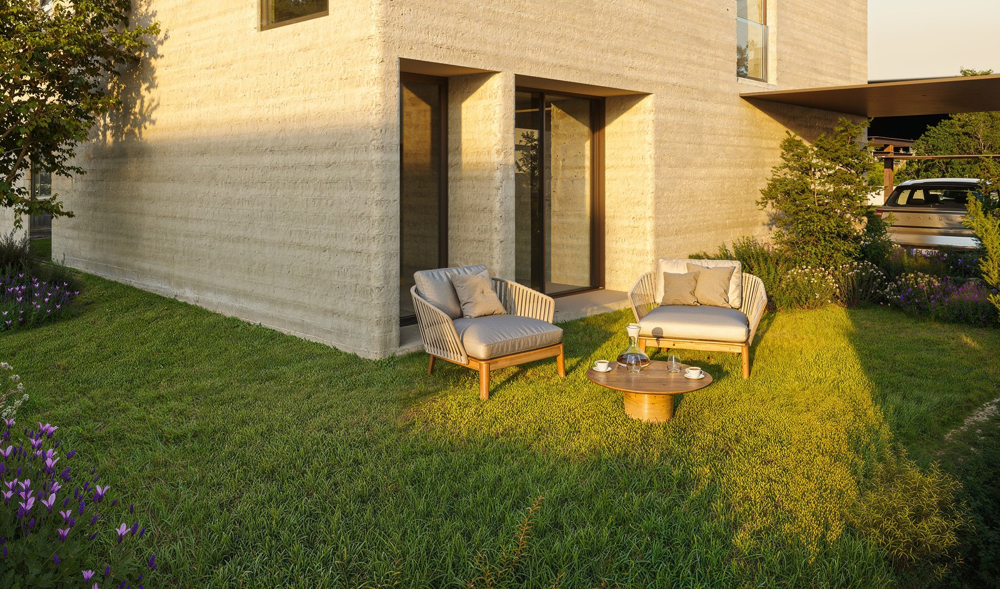

A inHabitus integra arquitetura, engenharia e fabrico numa só equipa. Resultado: custo previsível, prazo controlado e qualidade auditável em cada unidade entregue.

✱ Valores aferidos em obra e certificados por entidade externa.
Quando a construção deixa de ser projeto e passa a ser sistema, prazo e custo tornam-se previsíveis. Industrialização + integração vertical, do estudo do terreno à entrega.
A nossa verticalização e agilidade permitem-nos construir mais casas, a preços mais acessíveis. Um processo que democratiza, que cresce depressa e que, contamos, em breve estar consigo.
Quatro métodos integrados num só sistema construtivo: impressão 3D in-situ, betão pré-fabricado, light steel framing e construção modular. Cada um resolve uma parte do problema: desperdício, prazo, custo, qualidade. Em conjunto, definem a forma como a inHabitus constrói.
Aplicação por camadas de material avançado, guiada por um modelo digital de alta precisão. O resultado: paredes contínuas, geometria livre, e a redução drástica de desperdício, prazo e energia.
Ver projetos →
Elementos estruturais e de envolvente betonados em ambiente controlado, com armaduras e acabamentos integrados de origem. Em obra, montagem com tolerâncias industriais e ciclos curtos. Ideal para empreendimentos de média e larga escala.
Onde o sistema impresso pede reforço (vãos amplos, pisos suspensos, coberturas), entra o light steel framing. Perfis metálicos calibrados, dimensionados por cálculo, integrados de fábrica ao sistema construtivo.

Painéis, núcleos técnicos e elementos de cozinha e casa-de-banho produzidos fora da obra, em ambiente controlado. Em obra, montagem com tolerâncias industriais e zero retrabalho. O sistema 3D fica responsável pela envolvente; o módulo entrega o interior.

O mesmo sistema construtivo, replicável. As mesmas tipologias, com variações controladas. O resultado: redução real de custo unitário, prazo previsível e qualidade auditável em cada unidade entregue.
Tipologias V2 e V3 definidas como produto. Variações controladas em vez de reinvenção por projeto.
Tratamos cada tipologia como um produto industrial. A V2-A, V2-B e V3 partilham o mesmo sistema construtivo e diferem em configuração interna, área e relação com o exterior. O cliente escolhe entre opções definidas, não entre o vazio.
Arquitetura, engenharia, fabrico e construção numa só equipa. Sem subcontratação especulativa.
O mesmo grupo desenha, calcula, fabrica e instala. Nenhum risco escondido em interfaces entre subempreiteiros. A responsabilidade técnica de cada unidade entregue é nominal e auditável.
Menos desperdício, menos retrabalho, menos imprevistos em obra. Trinta por cento de redução face ao tradicional.
Quando o sistema não muda, o custo deixa de oscilar. Cada projeto é um derivativo do anterior. Preçário transparente, sem custos-surpresa em fim de obra.
Um único processo aplicável de Carreço a qualquer geografia onde o terreno e o regulamento o permitam.
O método nasceu para funcionar em mais do que um terreno. Carreço é o primeiro caso real. Norte, Centro e Sul seguem-se, com adaptação a regulamentos locais e zero compromisso no sistema construtivo.
Antes do primeiro tijolo, três meses de leitura do terreno: viabilidade, licenciamento e estudo solar feitos por equipa interna.
Arquitetura e engenharia em modelo único BIM. Tudo coordenado antes da fabricação para zero retrabalho em obra.
Impressão 3D em obra para a envolvente. Elementos pré-fabricados em fábrica para o resto. Tolerâncias industriais, prazo controlado.
Acabamentos, comissionamento de Smart Home, vistoria partilhada com o cliente. Chave-na-mão, sem caixa de surpresas.
A inHabitus permanece no projeto depois da chave. Vida em condomínio, espaços partilhados e manutenção do sistema construtivo, pela mesma equipa que o ergueu.

Construir de forma responsável é também construir de forma inteligente. Menos resíduo, menos energia, menos prazo, sem comprometer escala nem qualidade. Os ganhos não são teóricos: estão no método.
Menos desperdício de material em obra face à construção tradicional.
Virar →Comparação de kg de resíduo por m² construído entre obras 3D e referência tradicional. Aferido em fim-de-obra, certificado por entidade externa.
Redução do custo total de construção.
Virar →Mão-de-obra, material, prazo, retrabalho e custos administrativos. Comparado contra orçamento tradicional para a mesma tipologia.
Redução de risco em obra face à construção tradicional.
Virar →Menos operações manuais e menos tempo em obra: impressão 3D e elementos pré-fabricados reduzem o trabalho em altura, a movimentação de cargas e a exposição a acidentes. Aferido por registo de sinistralidade face à obra tradicional.
Redução do prazo de entrega ao cliente final.
Virar →Cinco etapas verticalmente integradas. Sem subcontratação especulativa, sem fricção entre arquitetura, engenharia e fabrico.
Cada decisão construtiva mede-se em desperdício, energia e tempo.
Inovação não é experiência sobre o cliente. Cada método já passou por ciclo completo de produção e entrega.
Coberturas verdes, materiais selecionados, painéis solares como opção.

A inHabitus permanece no projeto depois da chave. Gestão de condomínio, manutenção do sistema construtivo, e os espaços comuns que tornam o empreendimento mais do que um conjunto de moradias.
Portaria com presença diária, vídeo-vigilância 24h em áreas comuns, cacifos inteligentes para entregas.
Ginásio e sala de yoga, piscina exterior, jardim e áreas verdes, parque infantil, lavandaria self-service.
Co-working e sala de eventos com cozinha. O bairro continua para lá da casa.
Quem construiu o sistema é quem o mantém. Rastreabilidade técnica de cada unidade.
Com a inHabitus, a casa vem com uma plataforma de serviços integrada: limpeza, manutenção, conveniência e comunidade. Viver dá menos trabalho e mais gosto, do primeiro dia em diante.
Presta um destes serviços? Junte-se à rede de parceiros inHabitus.
Quero ser fornecedor →